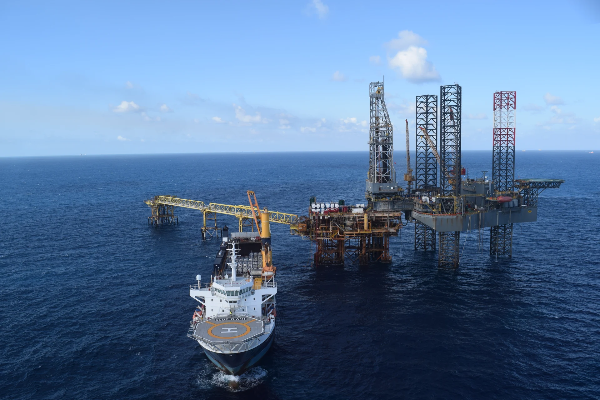
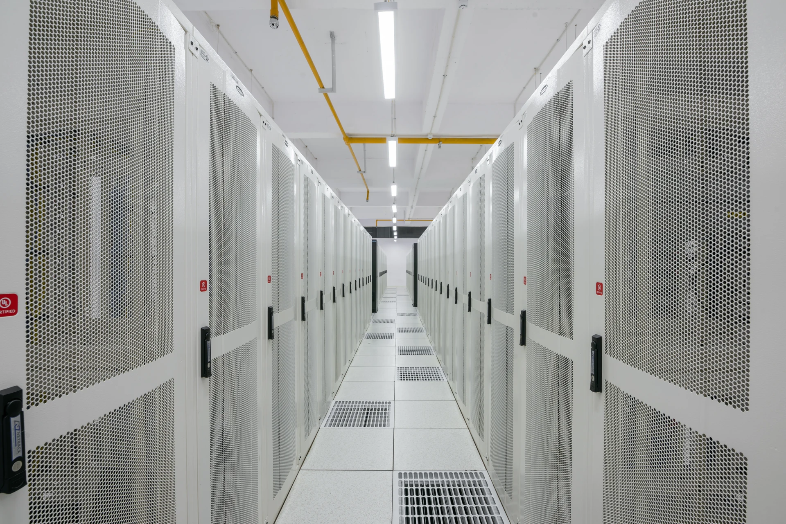
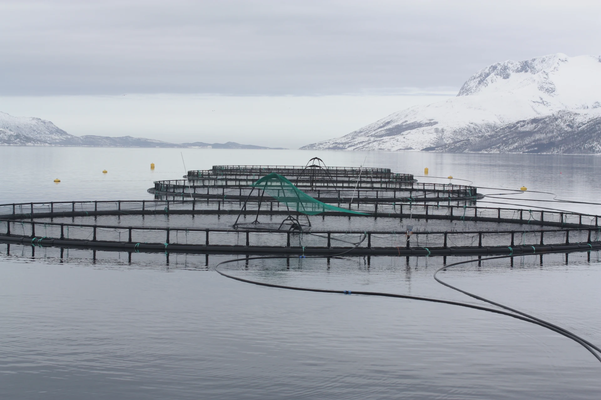
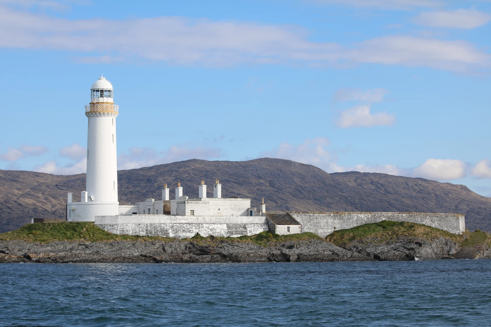

Power for a world
beyond the shore.
Four areas where we see a role for wave energy.
Each begins with a site, an energy need and the work to validate a solution.

Offshore energy.
A new possibility.
Explore wave power alongside existing offshore energy systems, with the aim of reducing reliance on fuel-based electricity generation.
Discuss an application +Illustrative sector photography · No Waveity deployment or customer relationship implied. Image credits

Power for a
connected world.
Explore locally generated renewable electricity for offshore data-centre concepts, subject to demanding reliability and power-quality requirements.
Discuss an application +Onshore data-centre photograph, illustrating the sector · Not an offshore or Waveity installation. Image credits

Energy for life
on the water.
Investigate wave energy for offshore aquaculture operations, with systems sized and integrated around the needs of each farm.
Discuss an application +Illustrative sector photography · No Waveity deployment or customer relationship implied. Image credits

Possibility beyond
the mainland.
Explore opportunities for islands, marine buoys, lighthouses and desalination, where access to onshore electricity can be difficult.
Discuss an application +Illustrative sector photography · No Waveity deployment or customer relationship implied. Image credits